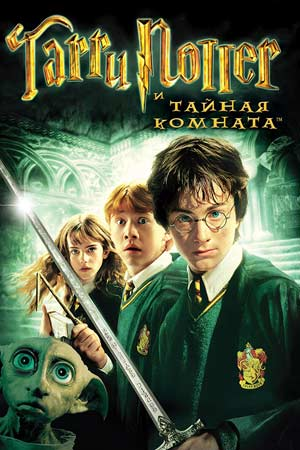
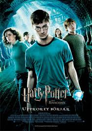
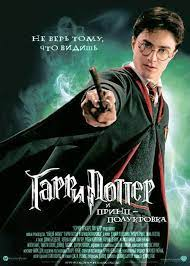

- Общие свединия
- Маг. защита
- Крестраж
- Другие навыки
- Список фильмов
- Филосовский камень
- Тайная комната
- Узник Азкабана
- Кубок огня
- Орден феникса
- Принс-полукровка
- Дары смерти 1
- Дары смерти 2
Общие свединия
Имя: Гарри Джеймс Поттер (среднее имя получил в честь отца, Джеймса Поттера).
День рождения: 31 июля 1980 года[1].
Родители: чистокровный волшебник-анимаг Джеймс Поттер и маглорождённая волшебница Лили Поттер (Эванс).
Телосложение: худощавый, невысокого роста.
Особые приметы: носит круглые очки, шрам в виде молнии на лбу.
Глаза: ярко-зелёные, миндалевидные, как у его матери Лили Поттер (Эванс).
Необычные способности: волшебник; змееуст (до уничтожения крестража, существовавшего в Гарри), один из лучших ловцов в Хогвартсе, также самый молодой ловец за последние примерно 100 лет. Видимо, свои способности к игре в квиддич унаследовал от отца.
Факультет: Гриффиндор (Распределяющая шляпа предлагала поступить в Слизерин)
Патронус: олень
Квиддич: ловец, капитан команды (с 6 курса). На четвёртом курсе тренировки и матчи были отменены из-за Турнира трёх волшебников, на пятом практически не участвовал в школьных соревнованиях из-за запрета Долорес Амбридж.
Семья: Джеймс Поттер (отец), Лили Поттер (мать), Сириус Блэк (крёстный отец), Петуния Дурсль (тётя, сестра матери), Вернон Дурсль (дядя), Дадли Дурсль (двоюродный брат), Джинни Уизли (жена), Джеймс Поттер-мл. (сын), Альбус Северус Поттер (сын), Лили Поттер-мл. (дочь).,и другие многочисленные родственники
Палочка: 11 дюймов, остролист и перо феникса. Сломана Гермионой Грейнджер в 7 части (Гарри Поттер и Дары Смерти). С седьмой части является также хозяином Бузинной Палочки, с помощью которой починил свою первую палочку, а также палочки Драко Малфоя, отобранной у него в поместье Малфоев.
Любовь: Джинни Уизли, с четвёртого по середину пятого курса нравилась Чжоу Чанг (ловец команды Когтеврана).
Мётлы: Игрушечная метла, подаренная Сириусом Блэком на первый день рождения Гарри, Нимбус-2000, подаренный Минервой МакГонагалл, Молния, подаренная Сириусом Блэком
Дети: старший — Джеймс Сириус Поттер (названный в честь отца Гарри, Джеймса Поттера, и крестного отца, Сириуса Блэка), средний — Альбус Северус Поттер - назван в честь двух директоров школы Хогвартс: Альбуса Дамблдора и Северуса Снегга (англ. Snape), младшая — Лили Полумна Поттер (в честь матери Гарри Лили (Эванс) Поттер и друга семьи Полумны Лавгуд).
Маг. защита
Гарри Поттер был защищён мощной магией, благодаря его матери, сумевшей применить древнее заклинание защиты во время нападения Тёмного Лорда. Она пожертвовала своей жизнью, чтобы спасти Гарри, и эта защита передалась её ближайшей родственнице — её сестре Петунье. Древняя магия переставала действовать только в двух случаях: по наступлении совершеннолетия (у волшебников это возраст 17 лет), или если он навсегда покидал дом своих родственников. В седьмой части книги он навсегда покидает Тисовую улицу, за несколько дней до своего совершеннолетия.
Крестраж
Гарри Поттер был незапланированным крестражем Волан-де-Морта. Он стал им в момент убийства Волан-де-Мортом его матери в Годриковой Впадине (самому Гарри тогда было год и три месяца). Это привело к нескольким последствиям:
- Гарри Поттер неоднократно проникал в сознание Волан-де-Морта и, в одном случае, его змеи Нагайны, также являющейся крестражем. За исключением последних по времени случаев, это происходило помимо его воли, обычно во сне, когда сам Волан-де-Морт испытывал сильные эмоции.
- Волан-де-Морт, в свою очередь, тоже мог проникать в сознание Гарри. Он сделал это в конце пятой книги, чтобы заманить Поттера в Отдел Тайн в Министерстве магии, в результате чего в схватке Белатрисса Лестрейндж убила Сириуса Блэка.
- Волан-де-Морт не мог умереть, пока Гарри Поттер не был обезврежен как крестраж. В этом отношении Гарри Поттер не отличался от других крестражей Волан-де-Морта.
- Гарри Поттер был змееустом до того, как перестал быть крестражем.
- Одну из многочисленных атак Волан-де-Морт произвёл в Запретном Лесу, во время Битвы за Хогвартс. Это привело к тому, что часть души Тёмного Лорда покинула Гарри, и тот перестал быть крестражем.
Другие навыки
Гарри Поттер обладает большими способностями в области Защиты от Тёмных Искусств. Уже на третьем курсе он научился вызывать Патронуса.
Гарри Поттер был блестящим игроком в квиддич. Уже на первом курсе он играл за свой факультет как ловец, став самым молодым ловцом за последние 100 лет. В общей сложности он поймал снитч и принёс победу своей команде в 7 из 9 игр (подробнее см. в статье квиддич). Его способности к полётам на метле пригодились не только в квиддиче: в первой книге Гарри поймал птицу-ключ, в четвёртой победил дракона в Турнире трёх волшебников, в седьмой спас Драко Малфоя от Адского Пламени.
По мнению Альбуса Дамблдора, Гарри Поттер — человек, полностью лишённый эгоизма.
Гарри Поттер владел змеиным языком или Парселтангом (англ. Parseltongue). Эта способность, о которой мальчик ранее не подозревал, проявилась у него ещё до учёбы в Хогвартсе, в террариуме (хотя сам он не понял, что шипит, а не говорит), когда Дурсли, не видя иного выхода, были вынуждены взять его в поездку в зоопарк, которую они устроили в день рождения двоюродного брата Гарри — Дадли.
фильмы с гариком
Филосовский камень

сюжет
Злой волшебник Волан-де-Морт, чиня террор в Великобритании, убивает родителей годовалого Гарри Поттера, однако при попытке убить самого Гарри бесследно исчезает, оставив тому на память лишь шрам на лбу в виде молнии. Тем же вечером, директор школы волшебства Хогвартс Альбус Дамблдор и его заместитель Минерва МакГонагалл появляются возле дома Вернона и Петуньи Дурсль, единственных родственников Гарри. Лесник Рубеус Хагрид привозит ребёнка, которого оставляют у дяди с тётей, чтобы слава не вскружила ему голову раньше времени.
Проходит десять лет, Гарри взрослеет. Юноша живёт в чулане под лестницей, Дурсли плохо с ним обращаются, поскольку ненавидят волшебников, а к своему сыну, Дадли, напротив, относятся с обожанием и исполняют любые его прихоти. С Гарри иногда случаются странные и необъяснимые вещи, за которые Дурсли наказывают его. Накануне одиннадцатилетия мальчик получает письмо, которое дядя Вернон не даёт ему прочитать. Приходит много таких писем, причём разными способами: вместе с хлебом от пекаря, в яйцах, через каминную трубу. Дурсли вместе с Гарри сбегают в гостиницу, а потом и в хижину на острове, где, по их мнению, отправители писем не найдут Гарри. В ночь, когда Гарри исполняется одиннадцать, в хижину вламывается Хагрид и рассказывает Гарри, что он волшебник и будет учиться в Хогвартсе, то есть в школе волшебства и чародейства. Вскоре Гарри с Хагридом отправляются в магический Косой переулок и идут в банк Гринготтс, где Гарри узнает, что родители оставили ему богатое наследство, а Хагрид тем временем забирает из своего сейфа какой-то предмет, завёрнутый в бумагу. Герои снимают часть денег и приобретают школьные принадлежности, а заодно Хагрид дарит Гарри подарок на день рождения — полярную сову, которая получает имя Букля. В магазине одежды Гарри встречает мальчика из богатой семьи, который неприязненно относится к маглам (неволшебникам) и всем, кто им сопереживает.
В магазине волшебных палочек Олливандера Гарри выбирает палочка с сердцевиной из пера феникса (волшебная палочка сама выбирает волшебника). Олливандер говорит, что это очень любопытно, поскольку палочка с другим пером этого же феникса принадлежала Волан-де-Морту.
Первого сентября от платформы девять и три четверти вокзала Кингс-Кросс Гарри отправляется в Хогвартс. В поисках входа на платформу он впервые встречается с Роном Уизли, который, впоследствии, становится его лучшим другом. По дороге в школу Рон рассказывает Гарри о мире магов, спорте магов квиддиче и самом Хогвартсе, в котором четыре факультета: Гриффиндор, Пуффендуй, Когтевран и Слизерин; между делом, Гарри встречает высокомерного мальчика из магазина одежды и узнаёт, что того зовут Драко Малфой, а также Гермиону Грейнджер, которая поначалу кажется Гарри и Рону выскочкой и всезнайкой. Распределяющая шляпа отправляет Гарри, Рона и Гермиону в Гриффиндор. Гарри замечает неприязненное отношение со стороны преподавателя зельеварения Северуса Снегга. На первом уроке полёта на метле Поттер конфликтует с Малфоем и начинает гоняться за тем на метле, совершенно без предыдущей практики хорошо держась в воздухе; его пилотаж замечает профессор МакГонагалл, которая тут же берёт Гарри в оборот и предлагает тому стать ловцом сборной факультета по квиддичу. Во время визита к Хагриду Гарри находит заметку в газете, из которой он узнаёт, что кто-то пытался похитить из банка предмет, который Хагрид забрал из сейфа на его глазах. Вскоре, гуляя по замку, Гарри и Рон забредают куда-то не туда и находят огромную трёхголовую собаку, которая охраняет какой-то люк. Чуть позже профессор защиты от тёмных искусств Квиррелл предупреждает учеников, что из подземелья вырвался тролль; Гарри и Рон спасают Гермиону от тролля, и они окончательно становятся друзьями.
смотреть фильмТайная комната
сюжет
Гарри Поттер уже отучился первый свой год в школе магов, теперь он уже ученик второго курса Хогвартса. Но по пути в школу Гарри встречает Эльфа Добби, и тот предупреждает его об опасности грозящей в стенах учебного заведения, и рекомендует не возвращаться туда. Но Поттер парнишка любопытный и делает всё наоборот, он становится практически единственным живым свидетелем очень таинственных событий, разворачивающихся в Хогвартсе. Очень скоро Гарри и его верные друзья узнают о существовании некой Тайной Комнаты, очень загадочной и запретной. Наши друзья не могут удержать своё любопытство и отправляются на поиски этого скрытого места, по пути их ждёт огромное количество опасных приключений и настоящая борьба за свои жизни.
смотреть фильмУзник Азкабана

сюжет
Всего лишь год спустя мы снова встречаем полюбившихся героев - Гарри Поттера, Рона и Гермиону в стенах Хогвардса. Ребята уже закончили два курса своего обучения и теперь они третьекурсники. Но не могут наши друзья спокойно жить и учится, прямо с появлением в родных стенах школы у них начинаются неприятности. Как оказалось из специальной магической тюрьмы Азкабан сбежал очень таинственный узник. Для Гарри очень опасно пребывание этого существа на свободе, чтобы обезопасить себя трое друзей бросаются на его поиски. Их снова ждут отчаянные смертельно опасные приключения и лишь их сила духа и дружба помогут им преодолеть их.
смотреть фильмКубок огня

сюжет
Вот и минул ещё один году обучения в школе Хогвардс тройки друзей Гарри Поттера, Рона и Гермионы, после летних каникул они возвращаются в это магическое заведение уже на четвёртый курс. При весьма таинственных и странных обстоятельствах Гарри выпадает честь принять участие в очень сложном и опасном соревновании - Турнире Трех Волшебников. Как правило на это мероприятие обычно отбираются более старшие и опытные представители волшебного сословия, и Гарри выглядит на их фоне как мальчик для битья. Да ещё и некоторые знаки указывают на скорое возвращение Лорда Волдеморта. Так что Гарри в скором времени будет бороться не только на соревнованиях, но и вступит в опасное противостояние, на кону которого будет его жизнь, а помогут ему его верные друзья и учителя.
смотреть фильмОрден феникса
сюжет
Вот и начался пятый год обучения Гарри в школе для магов Хогвартс. Но вот его очень огорчает то, что практически все маги и ученики отрицают факт возвращения Волдеморта, и ведут себя так как будто миру ничего не угрожает. Министр Магии и глава учебного ведомства Корнелиус Фадж, опасаясь главу Хогвардса Альбуса Дамблдора, назначает ему в помощники профессора Долорес Амбридж, которая будет вести лекции по защитной магии от сил зла. Но вот на практике оказывается что эти приёмы практически бесполезны и бессильны. Тогда по совету и с помощью своих друзей Гермионы и Рона, Гарри берётся за самостоятельное обучение студентов методам защиты от сил зла. Он тайно встречается с учениками школы, которые называют своё общество Отрядом Дамблдора, и готовит их к смертельной схватке которая предстоит в ближайшем будущем.
смотреть фильмПринс-полукровка
сюжет
Мир волшебников и маглов ощущает ужасающую мощь Волан-де-Морта, а в Хогвартсе далеко не так безопасно, как было раньше, он перестал быть надежным убежищем. Гарри беспокоиться о том, что в замке явно затаилась некая темная сила, которая несет угрозу его обитателям, однако Дамблдор не обращает внимание на его предчувствия и в основном занимается подготовкой своего ученика к финальной схватке, что состоится совсем скоро. В Хогвартс приглашен преподаватель по зелье варению, имеющий обширные связи, от которого Дамблдор надеется получить крайне важную информацию о крестражах. В это же время большинство учеников подвергается постоянным атакам со стороны различных врагов, время спокойствия окончилось, грядут тяжелые деньки.
смотреть фильмдары смерти часть1

сюжет
Дамболдор мертв и Министерство Магии находится под контролем злобных магоненавистников, а Хогвартс захватили темные силы. Гарри Поттеру исполняется семнадцать, и он отправляется с командой своих друзей на поиски загадочных крестражей. Становится все сложнее и сложнее определить, где зло, а где добро. В процессе поиска Гарри понимает, чтобы победить эту битву с Волан-де-Морам ему нужны Дары Смерти. В любом случае Поттеру придется рассчитывать только на свои силы..
смотреть фильмдары смерти часть2

сюжет
В начале сюжета упоминается о чем была первая часть. Затем последуют события, от которых мурашки бегут по коже. Гарри и его друзья должны найти все крестражи, в которых была заключена душа Волан-де-Мора. Разыскав всех, кроме одного, Гарри узнает страшную правду – он тот самый последний крестраж. Гарри должен спасти мир не взирая ни на что
смотреть фильм